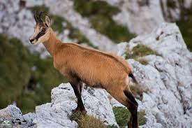

Învățăm
Vegetația și fauna României
Vegetatia naturala are un fond primordial forestier caracteristic Europei Centrale , care prezinta diferentieri generate de altitudine, de etajele de clima, si cuprinde p 21321e421v este 4000 de specii. Astfel, stejarul pre-domina in zonele de campie, fagul urca in Subcarpati si pe muntii mai scunzi, iar coniferele (molidul,bradul, pinul etc.) ajung pana la limita superioara a padurilor. Vegetatia forestiera prezinta interferente in zonele de tranzitie ale reliefului, iar din prezentele juxtapuse ale diferitelor specii rezulta , toamna, o bogata paleta colo-
In diferite locuri din tara traiesc plante rare, unele endemice, altele constituind relicte din epoci inde -
Populatiile de animale sunt dispuse pe zonele si etajul de vegetatie care constituie mediul lor de viata.


Fauna cuprinde peste 3.600 de specii care provin tot din cele trei mari provincii europene : Europa Centrala , cu animale mari , Europa Rasariteana, cu rozatoare si pasari rare ( dropia) si Europa de Sud, cu specii ca vipera cu corn, broasca testoasa de uscat, scorpionul, dihorul etc. Insemnatate deosebita prezinta fauna cinegetica -reprezentata prin ursul cafeniu,capra neagra, capriorul, risul, cerbul carpatin, mistretul, iepu-
Printre marile daruri pe care natura le-a oferit pamantului romanesc se afla si cele peste 2000 de izvoare minerale,dintre care multe sunt termale.Puterea tamaduitoare a unora dintre ele este cunoscuta de peste
Cele mai bogate zone in izvoare minerale si termale se afla de-a lungul Carpatilor si Subcarpatilor,
Cel mai vechi element al vegetatiei actuale care se pastreaza din perioada rece a ultimei glaciatiuni este molidul, esenta nord europeana, care a reszitat frigului, coborand in campie. In perioada de incalzire post glaciara incep sa patrunda foioasele dinspre sud, iar molidul sa urce pe munti. Fagul, azi comun in padurile noastre, patrunde tarziu din vestul Europei. Mai tarziu, inainteaza din E continentului stepa, caracterizata prin vegetatie ierburoasa. Asadar, in forma ei actuala, vegetatia tarii noastre este relativ recenta. Tabloul actual al vegetatiei naturale, insumeaza aceste patrunderi si transformari in timp, grupand formatiile vegetale intr-o etajare dupa altitudine.
In zonele joase de campie si de dealuri putin inalte, din SE tarii (Baragan Dobrogea Centrala si de S, si SE Moldovei) erau carcteristice pana la inceputul sec 19 pajistile stepei. In vecinatatea acestora, silvostepa, cu palcuri de padure (cuprinzand stejarul pufos si stejarul brumariu) se intinde tentacular din SE tarii spre N, pana in Campia Moldovei, in V, pe langa Dunare, pana in S Campiei Olteniei si chiar in Campia de Vest. Ulterior, devenite importante zone agricole, atat stepa cat si silvostepa s-au transformat, s-au imbogatit in specii, astfel ca azi nu mai cuprind decat resturi ale acestor formatiuni initiale impestritate cu alte ierburi (stepa secundara).
O parte insemnata a teritoriului tarii, incepand pe alocuri chiar din campie (Vlasia, Gavanu - Burdea, Burmazul) pana la 1800 m altitudine iar in nordul tarii pana la 1600 m, o constituie zona de padure ce a suferit restrangeri indeosebi in zonele deluroase, apte pentru agricultura. Dar padurea si-a pastrat mai bine caracteristicile propri fiecarui etaj. Astfel la altitudini mici, in medie sub 500 m, se intinde etajul stejarului, alcatuit la partea inferioara, din specii de stejar (cerul si garnita), iar la partea superioara din gorun. Se adauga si alte specii de foioase (carpen, ulm, tei). Etajul fagului urca din subcarpati si dealurile mai inalte din Pod. Transilvaniei pe muntii mai scunzi din Banat si Muntii Apuseni, ajungand pana la 1200 m, iar in amestec cu rasinoasele, chiar mai sus.
Etajul coniferelor, cuprinzand molidul, bradul, pinul si pe alocuri zada, urca pana la limita superioara a padurii. Cele trei etaje se interfereaza in zone de tranzitie si, pe alocuri, prin vai reci si umbrite, se produc chiar inversari intre etajele de vegetatie, esentele termofile urcand pe inaltimi insorite, iar esentele de clima rece coborand pe vaile umbrite.
Zona alpina de pe muntii inalti, a putut fi numita si stepa rece, intrucat dominante fiind pajistile, in care se ma gasesc la partea inferioara tufisuri de ienupar si jneapan sau alti arbusti pitici (afin, merisor). In largul vailor mari, datorita umezelii persistente, apare o vegetatie specifica de lunca, cu stuf, papura, rogoz si adesea cu palcuri de salcii, plopi si arini. Se remarca asadar o mare varietate a vegetatiei spontane in Romania.
In Delta Dunării predomină vegetatia de mlastină stuficolă, care ocupă cca. 78% din suprafata totală. Principalele specii sunt stuful, papura, rogozul, în amestec cu salcia pitică si numeroase alte specii.
Fauna României a fost si este inca una din cele mai bogate si variate din Europa, , specii rare sau chiar unice pe continent. Capra neagra, ursul brun, cerbul carpatin, lupul, râsul, jderul, cocosul de munte sunt specii ce populeaza muntii, iepurii, vulpile, mistretii, caprioarele, potârnichile, pitpalacii sunt intâlniti pe dealuri si in zona de câmpie. Delta Dunarii cu o arie de 5.050 km patrati (din care 4,340 km patrati pe teritoriul României) ramâne sanctuarul pasarilor salbatice si a pestilor (crap, stiuca, salau, somn, etcExtinderea zonelor populate a redus libertatea de miscare a animalelor si resursele de vânatoare au scazut cu 10-20% in ultimii ani.
Ca si in cazul vegetatiei, rigorile perioadelor glaciare din cuaternarul inferior, au dus la disparitia elementelor faunistice mai vechi (mastodont, rinocer, tapir, gazela). Fauna actuala s-a format in postglaciar prin elemente venite din S Europei cu cca 10.000 ani in urma. Cele mai recent venite sau intorduse prin colonizare sunt cerbul lopatar, fazanul, cainele enot si bizamul, in Delta Dunarii, iar recent elanul, in jud.Botosani. Exista o stransa legatura intre zonele de vegetatie (care ofera hrana si adaopst) si repartitia teritoriala a faunei. Astfel, in zona stepoei si silvostepei, atat de intens transformata, caracteristice sunt rozatoarele (iepurele, harciogul, popandaul, orbetele) iar dintre pasari: dropia, prepelita, potarnichea. Dropia este orcotrita de lege. Pentru padurile de foioase, specifice sunt mistretul si viezurele, precum si unele animale de prada ca: lupul, vulpea, pisica salbatica, alaturi de specii patrunse fie din silvostepa (iepurele), fie din etajul coniferelor (caprioara, veverita). Se adauga o mare varietate de pasari: ciocanitoarea, cinteza, etc. In padurile de munte sunt animale de interes cinegetic precum: ursul, cerbul, rasul, cocosul de munte, gainusa de alun.
Mai sus, in zona alpina, se mentine o relicva din glaciarul tarziu, capra neagra, repopulata si in unele masive din care disparuse recent (Rodna, Ceahlau, Bucegi); iar dintre pasari acvila de munte.


CAPRA NEAGRA:
Odata cu venirea primaverii, caprele incep sa fete iezi care, dupa numai cateva zile sunt in stare sa-si urmeze mamele. Toamna, incep sa se adune in carduri mai mari, stand toata iarna impreuna, sub ocrotirea unui exemplar batran. Tapii reprezinta santinelele cardului. La cel mai mic sunet sau aspect suspect acestia alarmeaza ceilalti membri ai grupului, scotand un suierat caracteristic si lovind pamantul cu picioarele din fata. Aria de raspandire in Carpatii romanesti se rezuma doar la cativa masivi muntosi: Rodnei, Ceahlau, Piatra Craiului, Bucegi, Fagaras si Retezat; de curand au fost introduse si in M. Vrancea, mai precis in rezervatia stiintifica Cheile Tisitei. In masivul Bucegi le veti putea depista pe versantul prahovean, in special in zona cuprinsa intre Costila si Jepii Mari. Datorita braconajului iezilor, s-a inregistrat o scadere a numarului de exemplare si imbatranirea efectivelor. Astfel, de la un numar de circa 9000 de exemplare inregistrate in 1990, s-a ajuns la 7700 exemplare in 1997. Legislatia romaneasca este foarte stricta in acest sens,capra neagra fiind declarata specie ocrotita si protejata prin lege. Cu toate acestea, in lipsa personalului autorizat ca-pabil sa monitorizeze situatia caprelor negre in cei 7 masivi muntosi (exceptie face Parcul National Retezat), efectivele de capra neagra se afla in continua scadere, punand in pericol existenta in libertate a acestei specii.
 
Pasarile din Delta Dunarii :
Pasarile sunt cele care au creat faima deltei, cunoscuta, înca de la începutul secolului ca un paradis avian. Renumele se datoreaza celor 327 specii pe care le putem întâlni în delta si care reprezinta 81% din avifauna României.. Dintre acestea cuibaresc 218 specii, restul de 109 specii trecând prin delta si ramânând diferite perioade de timp toamna, iarna si primavara. Pasarile acvatice sunt cele mai numeroase : cuibarersc 81 specii si trec prin delta 60 specii, în total 141 specii, ceea ce reprezinta 82% din avifauna acvatica europeana. Avifauna acvatica din Delta Dunarii este alcatuita dintr-un nucleu de specii vechi, bine adaptate la mediul acvatic. Nucleul avifaunei este format din 75 specii a caror viata este legata de prezenta apei : cufundari, corcodei, furtunari, pelicani, cormorani, stârci, lopatari, tiganusi.
Fauna acvatica :
Fauna acvatica se diferentiaza deasemenea dupa altitudine.
In apele repezi si reci de munte este domeniu pastravului. Mai jos, la altitudini mijlocii, se succeed cleanul, apoi mreana, iar in apele mari de campie, caracteristic este crapul, mai frecvent in Dunare si afluentii principali. Alaturi de aceasta specie, traiesc carasul, stiuca, platica, salul, rosioara. Pe parcursul Dunarii, in cursul sau inferior, patrund din apele Marii Negre, in perioada depunerii icerlor, si pesti marini migratori de mare valoare: sturionii (nisetrul, morunul, pastruga, cega) - ei traiesc numai in bazinele Marii Negre si Marii Caspice. In Marea Neagra, reprezentative sunt scrumbiile albastre, calcanul si pesti mai mici precum hamsiile, stavrizii, guvizii. Sturionii (de la care se obtine caviarul) pot fi gasiti pe cursul inferior al Dunarii iar delfinii, heringii, calutii de mare, chefalii in Marea Neagra. Pescuitul intensiv si cresterea poluarii (la care s-a adaugat si braconajul in ultimii ani) au diminuat semnificativ cantitatea de peste in ultimele doua decenii.
Rezervatii si monumente ale naturii:
In tecutul istoric au disparut din fauna tarii noastre mamifere ca bourul, zimbrul (repopulate), antilopa saiga, castorul, tarpanul. Unele specii actuale sunt pe cale de disparitie: dropia, pelicanul, zaganul. Pentru a preintampina disparitia unor specii din fauna si flora tarii si a conserva anumite elemente interesante de peisaj sau formatiuni gelologice, cativa mari oameni de stiinta, printre care Emil Racovita si Alexandru Borza, au obtinut inca din 1930 promulgarea unei legi pentru ocrotirea naturii. Pe baza acesteia s-au creat primele rezervatii naturale. In prezent exista un mare numar de rezervatii faunistice (in Delta Dunarii sau prin munti), floristice (turbaria Poiana Stampei - Vatra Dornei), forestiere (Codrii Seculari de la Slatioara in Muntii Rarau), piscicole (pentru mentinerea lostritei pe Bistrita Aurie), geologice (Dealu cu Melci pe valea Ariesului Mic) sau cu fenomene rare (vulcanii noroiosi din jud. Buzau, Rapa Rosie de langa Sebes), speologice (cu pesteri de mare interes). Pe aceeasi baza s-au organizat rezervatiile parcul National Retezat si urmeaza sa se organizeze si altele in Muntii Apuseni, in Carpatii Meridionali, unde elemente rare ale naturii sunt ocrorite de lege. Deasementea Delta Dunarii a fost decretata rezervatie a biosferei si a intrat in circuitul international al rezervatiilor si monumentelor naturii.
ROMANIA - VEGETATIE/FAUNA/SOLURI
Zonele de vegetatie din Romania
1.1 Zona stepei
– Se intalneste in sud-estul tarii (Baragan, Dobrogea, Campia Siretului Inferior)
– Climat cu veri fierbinti si ierni geroase
– Vegetatia: colilie, negara, paius (mare parte inlocuita cu cereale sau pajisti)
– Soluri:cernoziomuri
1.2 Zona silvostepei
– Apare in Campia Moldovei, sudul podisului Barladului,sectoare din Campia Romana (cu precadere in partea de sud ), mare parte din Campia de Vest)
– Din cauza climatului mai umed (spre deosebire de stepa) aici formatiunile specifice zonei de stepa se imbina cu palcuri de paduri
– Specii de plante:stejar pufos, cer, stejar brumariu
– Soluri din categoria molisoluri
1.3 Zona de padure
– Se desfasoara din zona de campie pana la altitudini de 1600 de m in Orientali si 1800 de m in Meridionali
– Exista mai multe etaje de vegetatie repartizate astfel:
– Etajul stejarului(sub 500 de m);soluri de tip brun roscate
– Etajul fagului (500-1200m); soluri din clasa cambisoluri
– Etajul coniferelor (1200-1800m);soluri din clasa spodosoluri
1.4 Zona subalpina
– Se desfasoara intre 1800-2000 m
– Specii de plante:afin, merisor, paius, zambru, jneapan, ienupar
– Soluri brun acide
1.5 Zona alpina
– Peste 2000 de m; soluri brun acide, ierburi
FAUNA:
-dropia este ocrotita de lege;
-capra neagra este pe cale de disparitie in masivele Rodna, Ceahlau, Bucegi, si de aceea a fost repopulata recent;
-fauna acvatica se diferentiaza dupa altitudine: -in apele reci si repezi de munte sunt pastravi;
-la altitudini medii este cleanul, mreana;
-la campie predomina crapul, mai frecvent in Dunare si afluentii ei; alaturi de crap mai sunt: carasul, stiuca, platica, salaul;
-pe Dunare, mai patrund, in perioada depunerii icrelor, sturionii (pesti marini migratori de mare valoare) – nisetru, morun, pastruga, cega, pesti fara oase, care traiesc numai in Marea Neagra si in Marea Caspica, ca relicte din cuaternar;
-in Marea Neagra sunt reprezentative scrumbiile albastre, calcanul si pestii mici – hamsiile, stavrizii, guvizii;
SOLURILE:
-cernoziomurile si solurile balane, levigat sunt caracteristice zonelor joase (pana la 500m), cu temperaturi ridicate (10–11°C) si precipitatii reduse. Aceste solurisunt bogate in humus, de mare fertilitate, specifice estului Campiei Romane, Dobrogei centrale si de sud, sud-estul Moldovei, Campiei de Vest.
-silvostepa se gaseste pe cernoziomul levigat, bogate in humus, de mare fertilitate, specific partii central-vestica a Campiei Romane, Campiei Moldovei si Campiei Moldovei
-solurile din stepa si silvostepa se numesc molisoluri
-solurile argiloiluviale (argiluvisoluri) sunt intalnite in zonele deluroase iar in cele montane mai joase, cu un climat mai racaros avem soluri brune si brune acide;
-solurile podzolice sunt mai sarace in humus, si apar sub padurile de fag si rasinoase;
-in zona alpina avem soluri alpine brune acide, specifice climatului rece, cu precipitatii bogate si vegetatie de pajiste;
-solurile podzolice si cele alpine brune acide se numesc spodosoluri;
-in unele zone se intalnesc soluri halomorfe (saraturi), mai frecvente in Baragan si Campia Moldivei, datorita antrenarii ascensional a sarurilor in timpul verii; lacovistile – in lunca si Delta Dunarii, dar si in Campia de Vest, aceste soluri avand un surplus de apa (hidromorfe) si solurile aluvionare de lunca. La acestea se mai adauga solurile nisipoase din sudul Olteniei, C. Carei (BH), sau de-a lungul Ialomitei sau a Calmatuiului. Aceste soluri totusi au fost redate agriculturii prin lucrari speciale (desecare, fixare).
{kind=link}
{kind=link}
{kind=link}
{kind=link}
{kind=link}
{kind=link}
{kind=link}
{kind=link}
{kind=link}
{kind=link}
{kind=link}